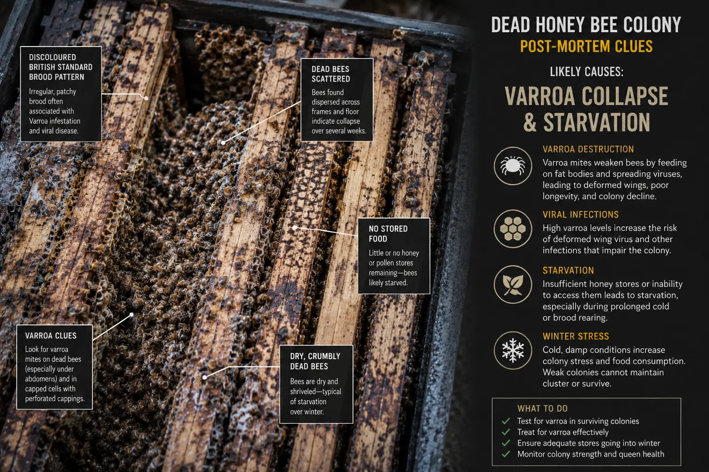

Post-mortem comparison
Colony Collapse: Varroa vs Starvation
Last updated: 1 May 2026

When a colony dies or collapses, two of the most common explanations are starvation and varroa-related collapse. They can look similar when the beekeeper finds the hive after the event, especially in winter or early spring.
Starvation is about lack of accessible food. Varroa collapse is about a colony weakened by mites and associated viruses, often before the final loss becomes obvious. In many cases the two overlap, because a varroa-weakened colony may become too small to keep warm or move onto stores.
This page helps you compare the evidence so you can decide whether the loss was more likely caused by food shortage, isolation starvation, varroa pressure, or a combination of causes.
Quick comparison
Starvation often leaves bees in the hive, sometimes in a tight cluster, with bees head-first in cells and little or no accessible food. Isolation starvation may leave stores present but out of reach of the dead cluster.
Varroa collapse often has a longer history. The colony may have dwindled before death, shown crawling bees, deformed wings, poor brood, high mite counts or a weak population going into winter.
If the final hive scene shows a small dead cluster with food nearby, the immediate cause may look like starvation, but the underlying cause may have been varroa damage earlier in the season.
Signs that point towards starvation
Starvation is more likely when bees are dead in a cluster, bees are head-first in cells, the hive is very light, and little or no food remains. This is especially common in winter or early spring when colonies cannot forage enough to replace stores.
Isolation starvation is a special case. Food may still be present in the hive, but the cluster dies because it cannot reach that food during cold weather. Stores several frames away may not help if the cluster is too cold or too small to move.
Read more in starvation in bees and isolation starvation.
Signs that point towards varroa collapse
Varroa collapse is more likely when the colony weakened gradually before it died. You may have seen crawling bees, deformed wings, poor brood pattern, high mite counts, missed treatment, late treatment or a colony that became smaller despite apparently having food.
A varroa-damaged colony may leave very few bees in the hive. Sometimes the beekeeper finds stores still present but the colony population has collapsed. This can be confused with absconding or robbing if the history is not considered.
Read more in varroa collapse signs, varroa symptoms and deformed wing virus.
Hive clues to compare
Start with where the bees are. A tight dead cluster often points towards starvation, isolation starvation or cold stress. Very few bees left in the hive may point towards varroa collapse, robbing after collapse, queen failure or gradual dwindling.
Next, look at the food. No stores suggests starvation. Stores present but away from the cluster suggests isolation starvation. Stores stripped out with wax debris may suggest robbing after the colony weakened.
Finally, look at the colony history. If records show high mite counts, deformed wings, patchy brood or crawling bees before winter, varroa becomes more likely. If records show a strong colony that became light on stores, starvation becomes more likely.
Can varroa and starvation happen together?
Yes. This is very common. A colony weakened by varroa may enter winter with too few healthy long-lived bees. Even if food is present, the cluster may be too small to keep warm or move onto stores.
In that situation, the final visible sign may look like starvation, but the underlying problem began earlier with varroa pressure. This is why mite monitoring and treatment timing matter long before winter.
A post-mortem should therefore include both food clues and varroa history, not just the final position of the dead bees.
When each cause is most likely
In late summer and autumn, varroa collapse becomes more likely, especially where mite levels were high or treatment was missed or delayed. Colonies may dwindle, show virus symptoms or become too weak for winter.
In winter, starvation, isolation starvation and varroa-weakened winter clusters are common explanations. In early spring, colonies can starve during cold snaps after brood rearing begins because food demand rises sharply.
For seasonal checks, use the Year in the Apiary guide alongside the varroa treatment calendar.
What to do after a colony loss
Before clearing the hive, take photos. Record where the bees were, where the stores were, whether there were bees head-first in cells, whether food was nearby, whether brood was present, and whether there were signs of robbing, damp, mould or pests.
Then review your records. Look at feeding, hefting, colony strength, brood pattern, varroa monitoring, treatment dates and any notes about crawling bees or deformed wings.
If serious disease is suspected, do not reuse equipment until you have taken appropriate advice. Otherwise, use the findings to improve feeding, mite control and winter preparation for the next season.
How HiveTag can help
HiveTag records can help you compare colony strength, stores, feeding, treatments and mite checks across the season. This is especially useful when the final loss looks like starvation, but the underlying problem may have started earlier with varroa or queen failure.
Good records make post-mortem diagnosis more reliable because you are not relying only on what the hive looked like after the colony died.
Learn more about HiveTag.
Varroa vs Starvation FAQ
Starvation often leaves a tight dead cluster, bees with heads in cells and little accessible food. Varroa collapse often shows earlier signs such as crawling bees, deformed wings, poor brood, high mite counts or a colony that dwindles before dying.
Yes. Varroa can weaken the winter bee population so badly that the cluster becomes too small to keep warm or reach food. The final signs may look like starvation even though varroa was the underlying problem.
Not always. An empty hive can be linked to varroa collapse, robbing, queen failure, absconding or a colony that dwindled over time. Use a post-mortem check to compare the evidence.
Check where the bees are, where the food is, whether brood or mite signs are present, and what your inspection records showed before the loss.